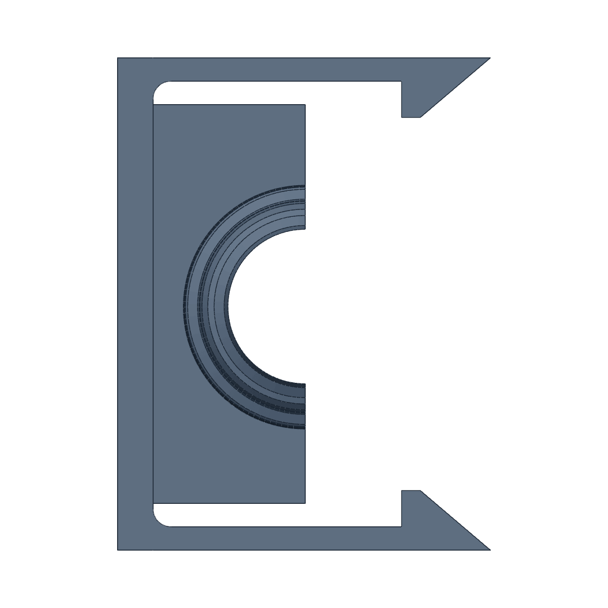

Fits · Snaps
A snap bends within its layers.
A snap is a leaf that bends out of the way and springs back. Printed so that every road runs the length of the leaf, the plastic itself takes the bend. Printed in courses across the leaf, the bend pulls one course off the next.
Seen in PET-GF · Mark 1 and Mark2 · textured PEI · left 0.4 mm · caps printed solidNot tried in: PETG, TPU

12345The cap now · looking down at the bedIt stands on its end, so every layer is this shape.
Body
A thick block shaped to the part it holds. It does not flex.
Leaf
The spring. Two millimetres thick and about twenty-two long since 2 November. Thinner tore. Thicker bent only at its root.
Root
A rounded inside corner, so the bend spreads along the leaf.
Catch
A flat face square to the pull. It will not cam open. To let go, the leaf is spread by hand.
Lead-in
One solid slope to a point, {{petgf-fits-above-core:/rear_plumbing/snap_tip_rise_mm}} mm long, that wedges the leaf aside on the way in.
AcrossThe bend is carried by the welds between courses.
AlongThe bend is carried by the roads themselves.
“Those snaps need to be, the wings need to be at least twice as thick.”
“Can they all be designed to be printed on their end like the pump cap?”
One week of caps · 1 to 8 November 2026 · Mark 1 and Mark2 · PET-GF
1 NOV
One thin arch
The pump’s first cap was all spring. “…this has basically 0 hold.” It became a thick box with two separate leaves.
1 NOV
Thin leaves, across
Flat catches on leaves 1.3 mm thick, the caps printed as they sit. Two of five tore while fitting.
2 NOV
Thick leaves, on end
2.6 mm, nearly twice as long, every cap on its end. They held, and bent only at the root.
2 NOV
In the middle
2.0 mm with a rounded root. That night three fits were “perfect, or close enough to perfect”.
3 NOV
No tunnels
A screwdriver tunnel under each catch bent the leaf only where the blade touched. “Please just remove those.”
8 NOV
A long point
The lead-in doubled. “The longer pointed tips on the snaps there worked beautifully.”
What we do now
Stand a snap part on the bed so its leaves lie in the layers. Give it a stiff body and separate leaves. Leave the leaves where fingers can spread them. Keep the catch flat and put the ease in a long lead-in.
Still openEvery verdict here is Derek’s hand. No snap has been measured for force, cycled or shaken on a running pump. The long point was approved on the water regulator’s cap. The other caps now carry it and have not been tried.
In the record
“basically 0 hold” · The round that tore · Thick leaves · In the middle · No tunnels · The long point · The caps today